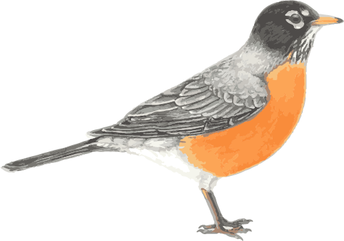

The quintessential early bird, American Robins are common sights on lawns across North America, where you often see them tugging earthworms out of the ground. Robins are popular birds for their warm orange breast, cheery song, and early appearance at the end of winter. Though they’re familiar town and city birds, American Robins are at home in wilder areas, too, including mountain forests and Alaskan wilderness.
American Robins eat large numbers of both invertebrates and fruit. Particularly in spring and summer they eat large numbers of earthworms as well as insects and some snails. (They have rarely been recorded eating shrews, small snakes, and aquatic insects.) Robins also eat an enormous variety of fruits, including chokecherries, hawthorn, dogwood, and sumac fruits, and juniper berries. One study suggested that robins may try to round out their diet by selectively eating fruits that have bugs in them.
American Robins are common birds across the continent. You’ll find them on lawns, fields, and city parks, as well as in more wild places like woodlands, forests, mountains up to near treeline, recently burned forests, and tundra. During winter many robins move to moist woods where berry-producing trees and shrubs are common.
Female robins choose the nest sites, which are typically on one or several horizontal branches hidden in or just below a layer of dense leaves. Nests are typically in the lower half of a tree, although they can be built as high as the treetop. American Robins also nest in gutters, eaves, on outdoor light fixtures, and other structures. In western prairies, American Robins may build their nests on the ground or in thickets, while in Alaska they sometimes nest on buildings or cliffs.
Females build the nest from the inside out, pressing dead grass and twigs into a cup shape using the wrist of one wing. Other materials include paper, feathers, rootlets, or moss in addition to grass and twigs. Once the cup is formed, she reinforces the nest using soft mud gathered from worm castings to make a heavy, sturdy nest. She then lines the nest with fine dry grass. The finished nest is 6-8 inches across and 3-6 inches high.